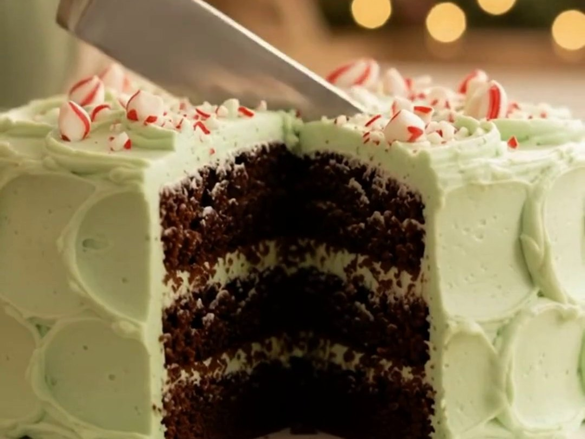

Old-fashioned · two-layer cake · Christmas favourite
Devil's Food Cake with Peppermint Seven-Minute Frosting
Remember those wonderful old-fashioned cakes Grandma used to make? Today we're bringing one back: a moist, dark devil's food cake under a cloud of fluffy peppermint seven-minute frosting, tinted the palest Christmas green. Oh, it's a Christmas beauty.

Ingredients
Devil's food cake
- ½ cup butter
- 1½ cups lightly packed brown sugar
- 2 eggs, well beaten
- ½ teaspoon vanilla
- 2 squares (2 oz) unsweetened chocolate, melted
- 1½ cups all-purpose flour
- 1¼ teaspoons baking soda
- ¾ teaspoon salt
- 1 cup plus 2 tablespoons milk
Peppermint seven-minute frosting
- ¾ cup sugar
- ⅛ teaspoon cream of tartar
- A few grains of salt
- 3 tablespoons cold water
- 1 unbeaten egg
- 3–4 drops peppermint extract (instead of vanilla)
- A little green food colouring, optional
This frosting recipe is enough for one 8- or 9-inch square cake. Double it to fill and frost this two-layer cake.
To finish
- Crushed candy canes, for the top (optional)
Instructions
The cake
- Prepare the pans: Preheat the oven to 350°F (175°C). Grease two 8-inch or two 9-inch round cake pans and line the bottoms with parchment paper. Metal pans are recommended.
- Cream the butter and sugar: Cream the butter. Gradually blend in the brown sugar, then beat until light and fluffy.
- Add the eggs: Add the beaten eggs and vanilla. Beat until well combined.
- Add the chocolate: Blend in the melted chocolate.
- Mix the dry ingredients: Blend or sift together the flour, baking soda and salt.
- Combine: Add the dry ingredients to the creamed mixture alternately with the milk, blending well after each addition.
- Bake: Divide the batter between the prepared pans. Bake for 30–35 minutes.
- Cool: Let the cakes cool in their pans for about 10 minutes, then turn them out onto a rack, peel off the parchment and cool completely before frosting.
The frosting
- Combine: Combine the sugar, cream of tartar, salt, cold water and unbeaten egg in the top of a double boiler.
- Beat over boiling water: Place over rapidly boiling water. Beat continuously with an electric beater until the frosting stands in stiff peaks, about 4–7 minutes. Scrape down the sides of the pan now and then.
- Flavour and tint: Remove from the heat. Add the peppermint extract and, if you like, a little green food colouring.
Putting it together
- Fill and frost: Place one cooled layer on your cake plate and spread with frosting. Top with the second layer, then swirl the rest of the frosting over the top and sides.
- Finish: Scatter crushed candy canes over the top just before serving, if you like.
Go easy on the peppermint, darling. Three drops is festive; ten drops is toothpaste. And a seven-minute frosting is at its fluffiest the day it's made, so frost the cake the day you plan to serve it.
Chocolate cake is my favourite, and this one has graced many a Christmas table. Bake the layers a day ahead if you like, wrap them well once cool, then whip up the frosting and finish the cake on the day.